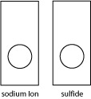
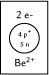
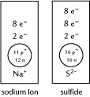

Module 1—Chemical Foundations
Ions
Current theories about the atom’s structure suggest that atoms have higher stability when their energy levels are filled to capacity with electrons.
Consider the noble gases. These elements are found in Group 18 on the periodic table and are known for their tendencies to be unreactive. As the theories you have studied to this point suggest, all noble gases have completely filled energy levels. For example, neon—which has 10 electrons surrounding the nucleus—has 2 electrons in the first energy level and 8 electrons in the second energy level. Both energy levels are completely filled. Because they are filled, neon is a stable gas and is very unreactive.
 Discuss
Discuss
Read “Formation of Monatomic Ions” on pages 23 and 24 of the textbook. After you have completed your reading, comment on the validity of the following statement:
“Atoms will gain or lose electrons to have an electron configuration like that of the nearest noble gas. When atoms gain or lose electrons, they become charged particles called ions. Energy level diagrams for ions can be drawn in a similar way as energy level diagrams for atoms. The difference is in showing a positive or negative charge on the ion.”
Share your comment with your classmates or some other people.
 Watch and Listen
Watch and Listen
You may wish to follow this Watch and Listen link to view the animation that reviews the formation of ions in a more in-depth manner. You may wish to try these Self-Check questions. Depending on your success, come back to this link before completing the other Self-Check questions.
Another explanation for the formation of ions appears in the “Audio Walkthroughs” section of Lesson 1.4 on the textbook’s website. If you do not already have access to this site, here is your username and password.
Username: nelsonchem_student
Password: nelsonchem_onlinelearning
 Self-Check
Self-Check
SC 5. Draw the arrangement of protons, neutrons, and electrons for the phosphide ion.
SC 6. Draw the arrangement of protons, neutrons, and electrons for the beryllium ion.
SC 7. Draw the arrangement of protons, neutrons, and electrons for diagrams for the following ions.

Self-Check Answers
SC 5. Draw the phosphide ion. The phosphorus atom has 15 protons and 16 neutrons. In a phosphorus atom, the electrons are placed into three energy levels with 2, 8, and 8 electrons, respectively, from the innermost energy level to the outermost energy level. The phosphorus atom will gain 3 electrons to fill its valence energy level and become the phosphide ion. With this gain of electrons, the atom is no longer neutral; it now has 3 extra negative charges. This charge is included with the symbol as shown.

SC 6. The beryllium atom has 4 protons and 5 neutrons. It has 4 electrons placed in a 2-2 configuration. The beryllium atom will lose 2 valence electrons to become a beryllium ion. With this loss of electrons, the beryllium atom now has 2 extra protons compared to electrons. This shows up as a 2+ charge on the ion. Its electron configuration is now like helium, the nearest noble gas.

SC 7.
